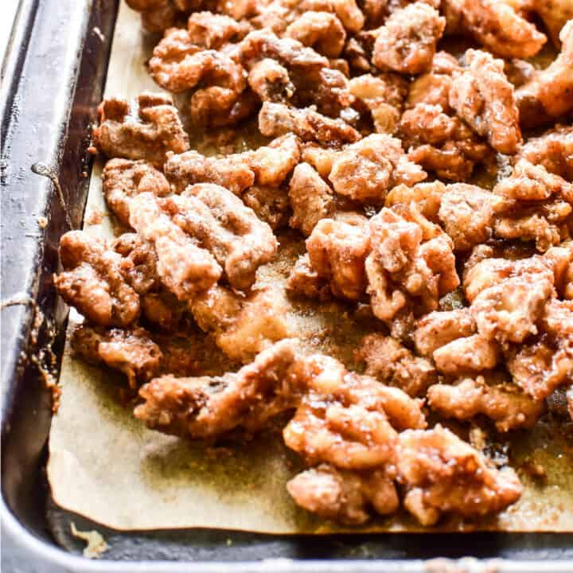

Back to Index
Candied Nuts

Description
Egg white candied walnuts for Wandi station
Ingredients
- 2 egg whites
- 2T extract of choice
- 5C (440g) walnuts
- 1C sugar
- 1/2t salt
- 3t cinnamon
- 1/2t cayenne pepper
Process
- Preheat oven to 225
- Combine dry ingredients
- Beat egg whites + extract until fluffy
- Toss pecans until fully coates with the beaten whites
- Add dry ingredients, toss
- Spread on baking sheet and bake for 60mins, turning ever 20mins
Notes
If no walnuts, pecans are acceptable